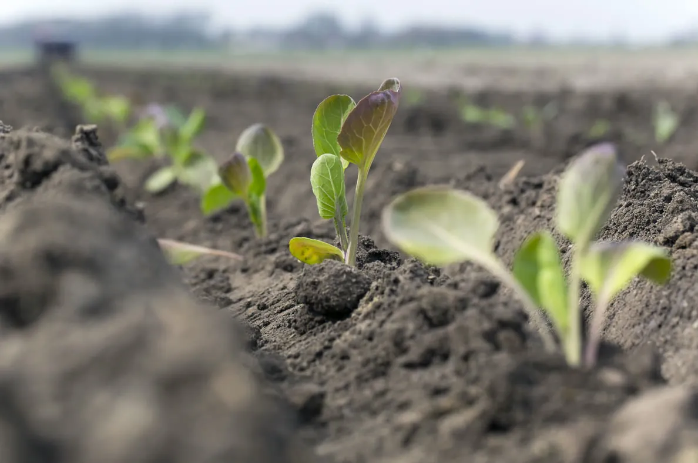
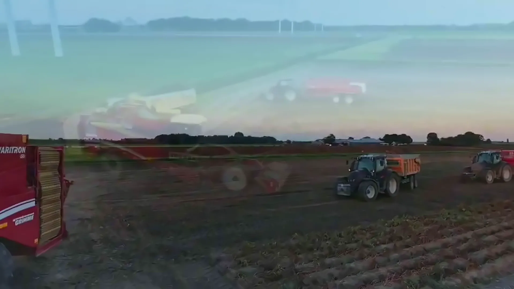
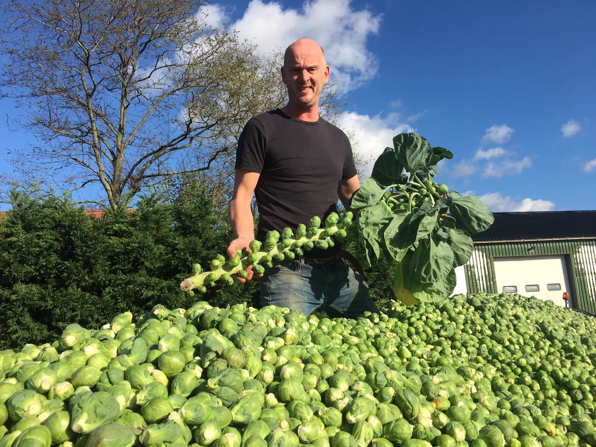
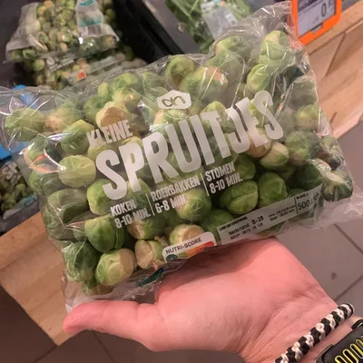
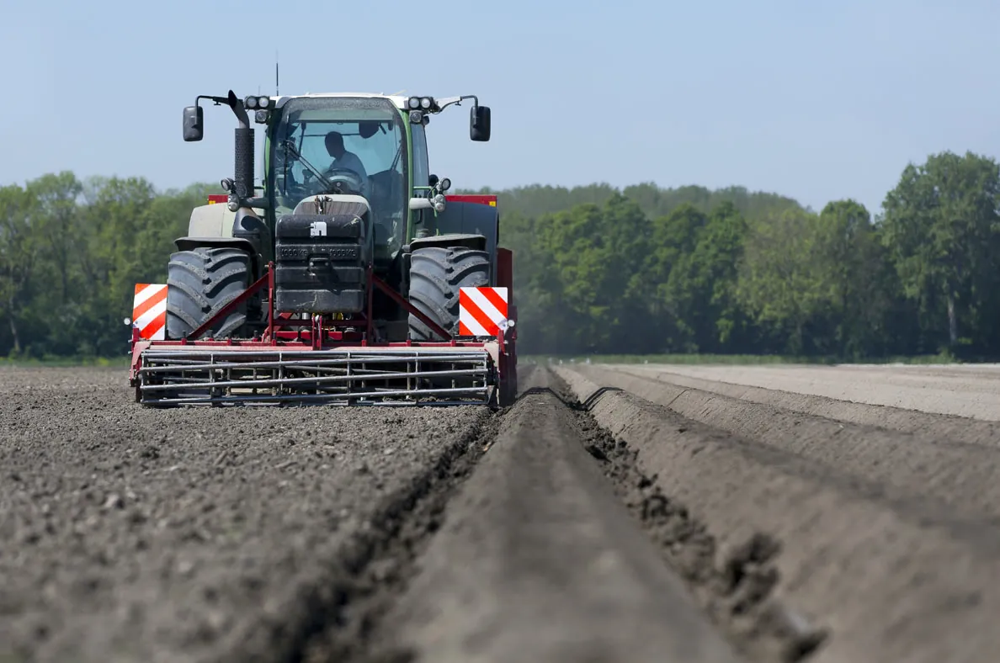
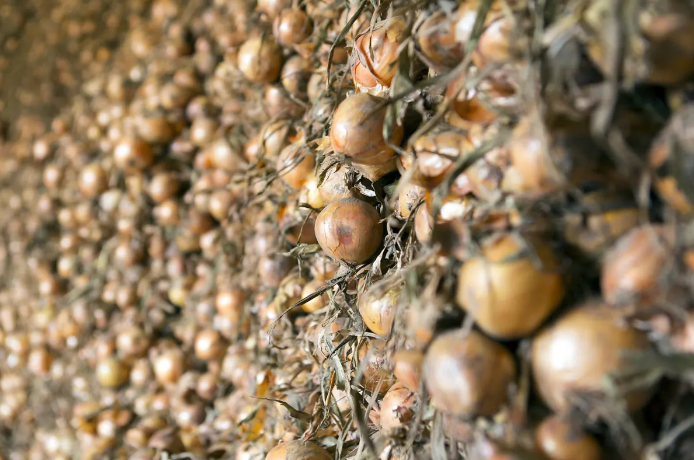
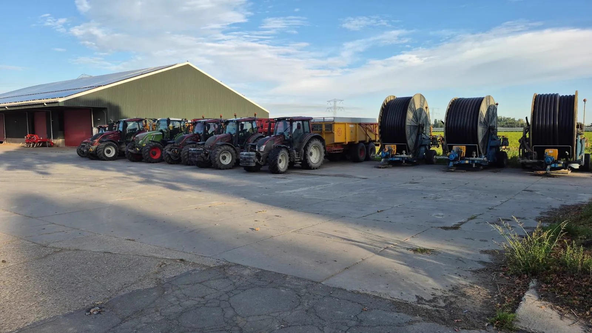
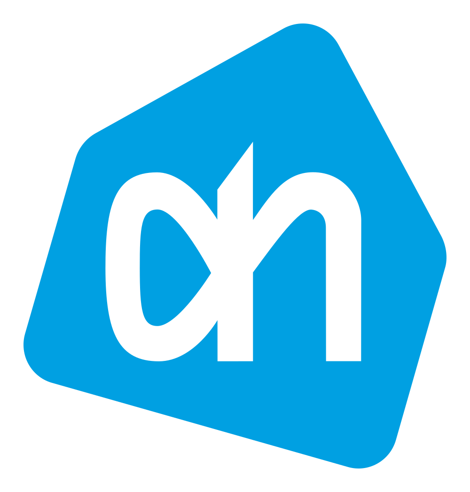
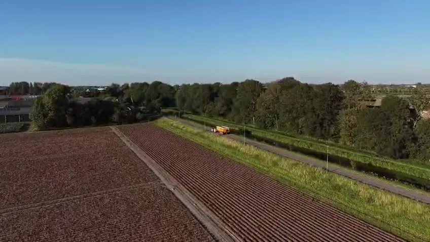

Spruiten Hoofdgewas
Ons specialisme: 80 hectare, oogst van september tot in februari.

Vooruitstrevend familiebedrijf van Huib en Chris Bos. Wij telen spruiten op 80 hectare, plus aardappelen, uien en zomertarwe. Van het eerste plantje tot de laatste oogstdag.
Ontdek onze spruitenH&C Bos is het vooruitstrevende akkerbouwbedrijf van de broers Huib en Chris Bos. Vanuit Zevenhuizen, midden in de Zuidplaspolder, telen wij op zo'n 80 hectare spruiten in Zevenhuizen en omgeving, met liefde voor het vak en respect voor de grond.
Wij investeren in moderne technieken en geloven in korte lijnen, eerlijk werk en kwaliteit die je terugziet in elk product. Wat wij telen, telen we zelf: van grondbewerking en planten tot oogst en bewaring.
Neem contact op
De spruit is het hart van ons bedrijf. Het is een teelt die geduld en precisie vraagt: in maart planten we de jonge plantjes uit, de hele zomer volgen we het gewas op de voet, en van september tot in februari oogsten we.
Juist die lange oogstperiode maakt spruiten bijzonder. Een vleugje vorst maakt ze zelfs zoeter. Zo leveren wij maandenlang verse, stevige spruiten van constante kwaliteit.

In maart gaan de jonge spruitplanten de grond in. Een goed geplant gewas is de basis voor een sterke oogst.
Gedurende de zomer groeit de plant uit tot een stevige stengel vol knopjes. Wij sturen bij waar nodig, met oog voor bodem en omgeving.
Van september tot in februari oogsten we met onze plukmachine. Daarna sorteren we de spruiten op maat, van klein tot groot.
Naast spruiten telen wij aardappelen, uien en zomertarwe. Een gezonde vruchtwisseling houdt de bodem vruchtbaar en onze gewassen sterk.

Ons specialisme: 80 hectare, oogst van september tot in februari.

Gepoot in het voorjaar, gerooid in de nazomer en zorgvuldig bewaard in onze eigen bewaarplaats.

Gezaaid in het vroege voorjaar, geoogst en gedroogd voor een lange houdbaarheid.
Een waardevolle schakel in onze vruchtwisseling, goed voor de bodemstructuur.
Indicatief. De exacte momenten hangen af van weer, ras en perceel.
Een goede oogst verdient een goede bewaring. Op ons erf staan moderne schuren met gekoelde bewaarruimtes, zodat onze producten ook maanden na de oogst hun kwaliteit behouden.
Met 15 trekkers en eigen machines voor poten, rooien, plukken en transport houden we de regie over elke stap. En we blijven investeren in nieuwe technieken, zoals onze nieuwe spruitenplukmachine.

Partners en merken waar wij mee werken

De grond is ons belangrijkste bezit. Daarom zorgen we er goed voor, zodat ook de volgende generatie er nog op kan boeren.

Tv-chef Hugo Kennis kwam voor Allerhande langs bij spruitenteler Chris: van groei en oogst tot het sorteren op maat. Of bekijk onze aardappeloogst van bovenaf.
Wij oogsten onze spruiten van september tot in februari. De jonge planten gaan in maart de grond in en groeien de hele zomer door.
Bij kou zet de plant een deel van zijn zetmeel om in suikers, als natuurlijke bescherming tegen bevriezing. Daardoor worden spruiten milder en zoeter van smaak.
Onze spruiten liggen bij Albert Heijn, in winkels door heel Nederland. Ben je zakelijk afnemer of wil je grotere partijen? Neem dan contact met ons op.
Door spruiten, aardappelen, uien en zomertarwe af te wisselen blijft de bodem gezond en vruchtbaar, en krijgen ziekten en plagen minder kans. Goed voor de grond, goed voor de oogst.
Heb je een vraag over onze teelten, ben je afnemer of wil je samenwerken? Neem gerust contact met ons op. We denken graag met je mee.
Door de kaart te laden worden gegevens gedeeld met Google. Privacy